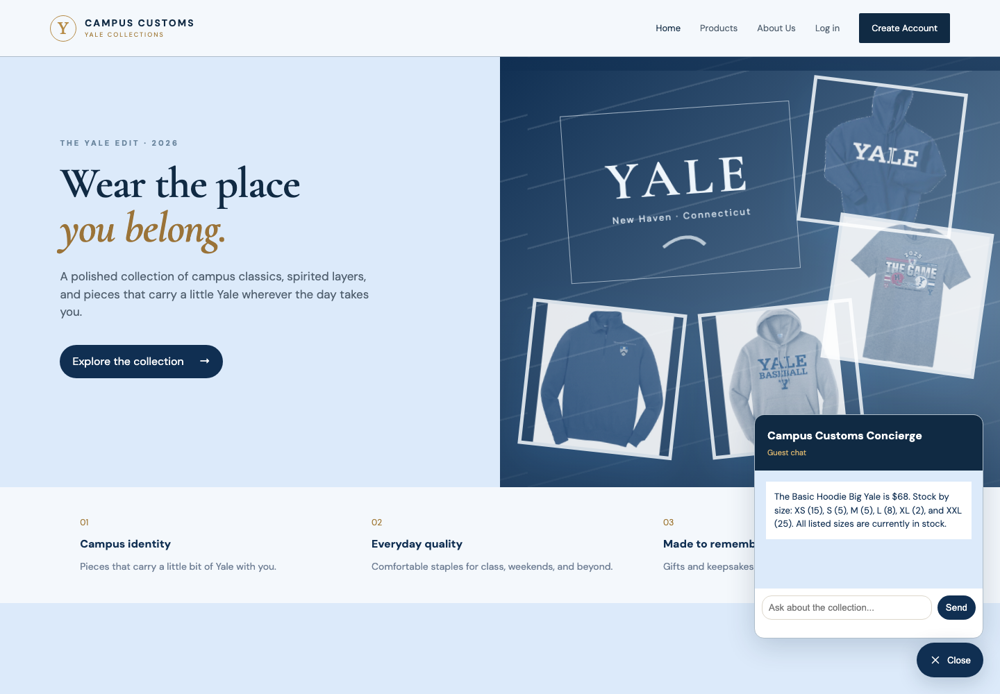
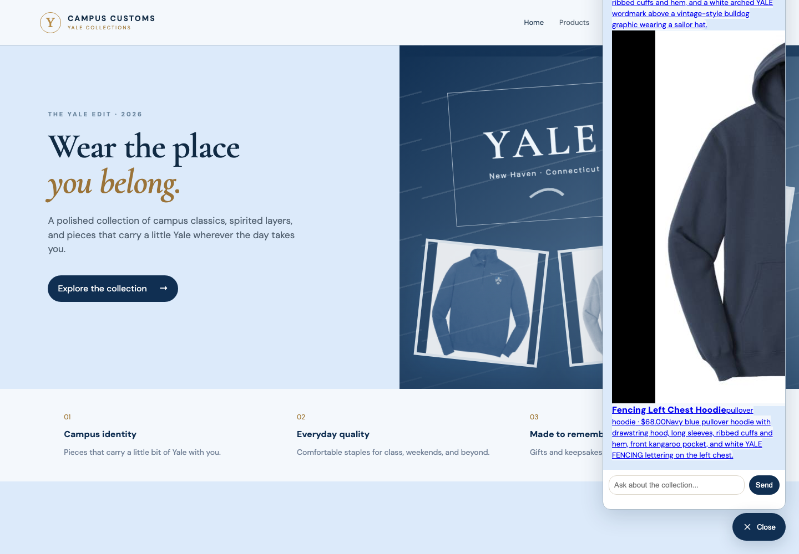

These screenshots were captured from the running Vite site with the FastAPI backend active.
1. Inventory and price lookup

The chat answers a price-and-stock question for the Basic Hoodie Big Yale. The response comes from the database lookup and shows size-level quantities, so the shopper receives factual availability rather than an invented estimate.
2. Dynamic hoodie search cards

After the shopper asks “What hoodies do you have?”, the chat response displays matching product cards with images, names, prices, and descriptions. These cards use the same product links as the main catalogue and open the detail view when clicked.
3. Problem 9 usability improvement: catalogue filters
The Products page includes controls for filtering by product type and sorting by price. These controls help shoppers narrow the collection and find an affordable item more quickly.